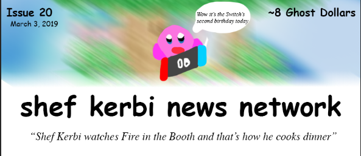
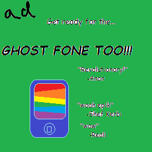
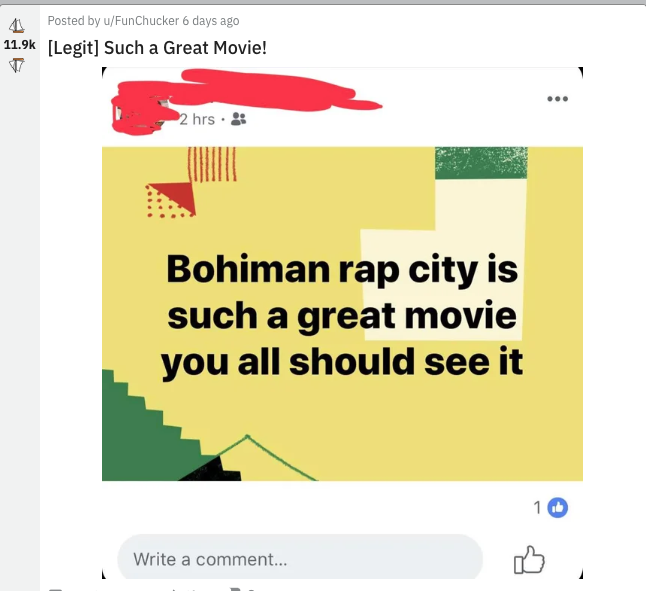

Episode 20: March 3, 2019
Back to index

YOU VIOLATED THE LAW!!!
Although most people are happy with the laws as they are now, many politicians, such as Jordan Cabula and Reeling Tur'tll suggest that 2019 new laws should be added to the 2019 edition of the Guiness Book of Pop Stahh Laws. Examples of these laws are Car Jaywalking (inappropriately crossing the street via a vehicle) and Sandsocking (the wearing of socks and sandals at the same time in public).
written by Apple the Cat

ANNOUNMENT BY SHEF KERBI
A few days ago, our team decided to start crediting who wrote the news articles again, which was a practise we used to do in the very first newsletters. More information along with your feedback will be shown in the Opionion column

BREAKING NOWS
Schools all across Dreem Lend have sent various complaints to the National Kreikeo Assembly for raining on the one week where everybody decided to schedule their athletics carnival.
written by Zeke Teddy
NEW 2019 PARASITUS NEWS
Professor Gourd-oh has discovered that 2019 parasitus is, in most cases, caused by inhaled clock dust fumes that play twister on your lungs, nose, and calendar, and can be prevented by calling a good clock cleaner, such as Keynsun DDDO, to clean your clocks for only $19.99 per clock, plus $1 if you call now!
written by Apple the Cat
officers brutally killed to death by bon starbuckle impostor!!!
A few officers and a hostage negotiator were killed to death this evening by a Bon Starbuckle imposter. "THIS IS CLEARLY [AN IMPOSTOR OF BON STARBUCKLE] WITH A GREEN HA[T!!!!!]", said the hostage negotiator moments before getting deathed by the aforementioned imposter. Shef Kerbi's team is currently tracking down the impostor, and not the police, because they're all dead. Find out more in the next edition of SKNN!
written by Apple the Cat
Now I don't wanna give my own opionion but...
OPIONION WITH SHEF KERBI AND BON STARBUCKLE
So we told you Shef Kerbi News Network fans on our Scratch page that you could post anything with the #SKNN hashtag and you could end up in our paper! In this episode, we'll respond to some of your feedback with the new SKNN format, as well as show some of your cool stuff!
robloxnoobofficial wrote:
"that crossword was too hard can you do an easier one this time?"
epbic_boi42 wrote:
"Hi, I'm one of the players for SDream KLand NSoccer NTeam and that's honestly a really genius name. I can rep that when we play our first game of competitive, what sport are we playing again?"
TSM_Liquid_FaZe_Ninja, a regular here on the column, wrote:
"Hey guys The Great Cave Offensive: Battle Royale is in Season 26 now! What's your opionion on the update"
Some of our viewers have decided to submit some images as well. User taxpayer1969 sent in this picture through the fax:
MikalVsauce sent in this image from one of my personal favorite websites, boneappletea:

If you would like to submit your own opionion, just go to our social media, on Twitter, Instagram or Scratch. But prefably Scratch because that's what everyone uses
Ask Bon And Bon's Cat I'm Just Gonna Stop Numbering These
Dear Bon, Is life pointless? Existential Emma
the only thing pointless around here is your bad attitude, emma. go outside and read a bike. or ride a book.
Dear Bon, can you do an improv Gornfeld strip for me? Sincerely, a Gornfeld fan
sure kiddo. here ya goes


BREAKING NEWS:
jon broke his ds again
written by Apple The Cat
COMIX
Candy Sadness by Apple

CROSSWORD ANSWER TIME
SPORT S
Nothing much at the moment, however the SDreem KLand NSoccer NTeam is doing well.
WETHA
with Zeke Teddy
Today it's raining stay inside like you know you want to, max of 14 and min of 6
Tomorrow... it's still raining. max 12, min 5
THANK YOU FOR WATCH. PLEASE TUN E IN NEXT TIME FOR MORE NESW

Shef Kerbi News Network follows the guidelines and conventions set by the 1984 High Quality News Act of Dreem Lend, which states
that any news published is to be of a high quality, is to remain unbiased and to show all sides of a news report, does not attack anyone, and protects the privacy
of people whose identities don't want to be revealed.
If you would like to file a complaint regarding content use, please message SKNN through our Scratch account. We also have a Twitter and Instagram account if you
prefer.
Shef Kerbi News Network respects the ancestors of Cappy Town, and understands that they are the reason why Dreem Lend exists.
Shef Kerbi News Network is proud to be a subsidiary of Shef Werld
this website is best viewed with Ned's Escape